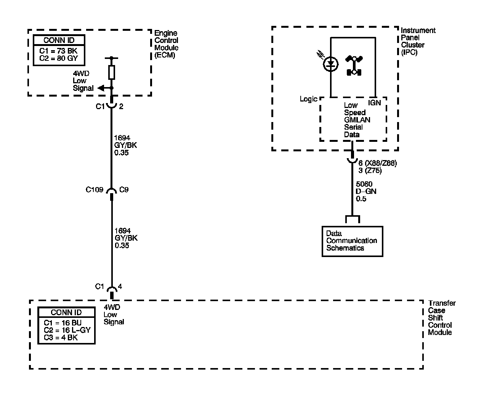

P2771
DTC P2771

Circuit Description
The four wheel drive (4WD) low circuit consists of the engine control module (ECM), a transfer case control module and the circuit wiring. The transfer case control module controls the 4WD low signal circuit. When the operator selects 4WD low, the transfer case control module grounds the signal circuit, and the 4WD low signal voltage on the circuit changes from ignition voltage to zero volts. The ECM then compensates for transfer case gear reduction in the transmission output shaft speed (OSS) sensor signal. The ECM uses the transmission OSS sensor signal to adjust shift points, line pressure and torque converter clutch (TCC) scheduling.
When the ECM detects a continuous open, short to ground or short to voltage in the 4WD low circuit, then DTC P2771 sets. DTC P2771 is a type B DTC.
DTC Descriptor
This diagnostic procedure supports the following DTC:
DTC P2771 Four Wheel Drive (4WD) Low Switch Circuit
Conditions for Running the DTC
^ No TP sensor DTCs P0122, or P0123.
^ No VSS assembly DTCs P0502 or P0503.
^ No cam or crank sensor DTCs.
^ The system voltage is 9-18 volts.
^ The engine speed is 1000-4500 RPM for at least 30 seconds.
^ The vehicle speed is greater than 11 km/h (7 mph).
^ The TP angle is 10-99 percent.
^ The gear range is not PARK, NEUTRAL or REVERSE.
^ The TFT is 20-130° C (68-266° F).
Conditions for Setting the DTC
DTC P2771 sets if one of the following conditions occurs:
Important: MTCR = Engine speed divided by, vehicle speed multiplied by the commanded gear.
Condition 1
^ The 4WD low switch is in 4WD low.
^ The transfer case is not in 4WD low.
^ The MTCR is 2.39-2.9 for 1.1 seconds.
^ All conditions are met twice.
Condition 2
^ The 4WD low switch is not in 4WD low.
^ The transfer case is in 4WD low.
^ The MTCR is 0.8-1.75 for 7 seconds.
Action Taken When the DTC Sets
^ The ECM illuminates the malfunction indicator lamp (MIL) during the second consecutive trip in which the Conditions for Setting the DTC are met.
^ The ECM commands a normal shift pattern, not a 4WD low shift pattern.
^ The ECM records the operating conditions when the Conditions for Setting the DTC are met. The ECM stores this information as Freeze Frame and Failure Records.
^ The ECM stores DTC P2771 in ECM history during the second consecutive trip in which the Conditions for Setting the DTC are met.
Conditions for Clearing the MIL/DTC
^ The ECM turns OFF the MIL during the third consecutive trip in which the diagnostic test runs and passes.
^ A scan tool can clear the MIL/DTC.
^ The ECM clears the DTC from ECM history if the vehicle completes 40 warm-up cycles without an emission-related diagnostic fault occurring.
^ The ECM cancels the DTC default actions when the ignition switch is OFF long enough in order to power down the ECM.
Test Description
The numbers below refer to the step numbers on the diagnostic table.
3. This step tests for a short to ground in the 4WD low signal circuit.
4. This step tests for an open in the 4WD low signal circuit or a faulty transfer case control module.